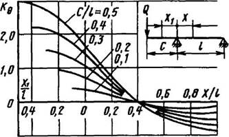
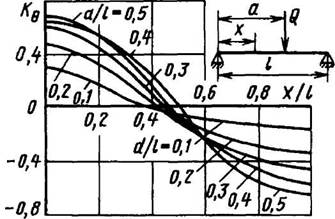
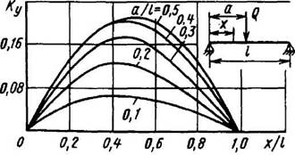
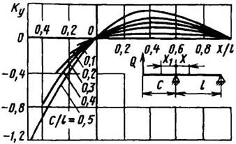
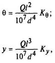
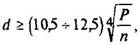

Расчет на жесткость
Вал, рассчитанный из условий динамической прочности, может не обеспечить нормальной работы зубчатых колес и подшипников, если под действием передаваемых усилий он будет чрезмерно деформироваться.
Расчет на жесткость сводится к определению прогибов у (рис. 3-6), углов наклона оси вала 6 и к сопоставлению их с допускаемыми. Допускаемый прогиб вала не должен превышать 0,0001-0,0005 расстояния между опорами или под зубчатыми колесами 0,01-0,03 модуля в см. Углы наклона оси вала в опорах не должны превышать 0,001 радиана при зубчатых колесах; то же в радианах, не более: 0,0025 – для цилиндрических роликоподшипников; 0,0016 – для конических роликоподшипников; 0,005 – для однорядных шарикоподшипников; 0,05 – для сферических подшипников.

Рис. 3

Рис.4

Рис.5

Рис. 6
Угол наклона оси вала 0 и прогиб вала ув расчетном сечении для двух основных схем нагружения (см. рис. 3-6) определяют по формулам

где θ – в рад; d и у – в см; Q – в Н;
Кθ и Ку – коэффициенты, учитывающие связь между точкой приложения силы и точкой, в которой определяют деформацию; коэффициенты берут по графикам (см. рис. 3-6).
Действительные деформации вала (согласно принципу наложения деформаций) определяют алгебраическим суммированием деформаций от каждой силы.
Для проверки вала на жесткость по углу закручивания при [φ] ≈ (4,4 … 8,8) 10-3 рад (~ 0,25 … 0,5°) на 1м длины вала пользуются формулой

где d – в см, Р – в кВт, n- в мин-1.